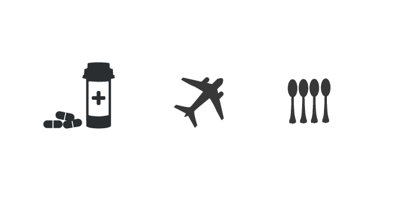
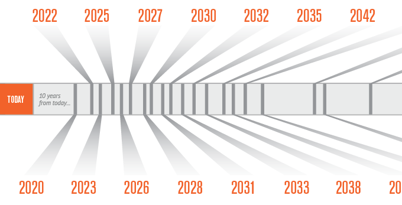

The seriousness of this matter is shown through everyday objects in the icons.

Starting from now, a timeline is shown till when all of the renewable resources of energy will be near-diminished.
In 2027, batteries will become as expensive as gold.